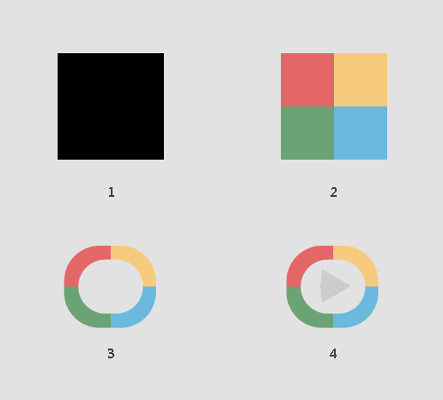

今天整理的这个动画估计大家都不会陌生，彩环旋转，看过之后是不是觉得很熟悉，对，这个就是优酷视频APP里面的加载动画。本人空余时间喜欢看些视频，留意到这个动画后就想用代码实现出来，今天整理了下，跟大家分享，如果有大牛能提出更好的实现方法，欢迎补充。案例请在chrome中查看。
这个动画的实现也非常简单，并没有使用太复杂的技术。关键点在于把四个变换背景色的元素分离出来，然后延迟动画开始的时间。动画的关键帧定义为变换四个背景颜色。

2.1 定义一个方形的容器。
2.2 定义四个不同背景色的方形子元素。
2.3 定义一个椭圆形的元素盖在子元素上方，椭圆形元素的背景色为页面背景色，这样就形成了圆环的效果。
2.4 在元素中心定义一个三角形元素，形成一个播放按钮。
最后在四个方形子元素上应用动画，延时改变其背景色。最后的效果就是圆环的四个部分轮流改变其背景色。